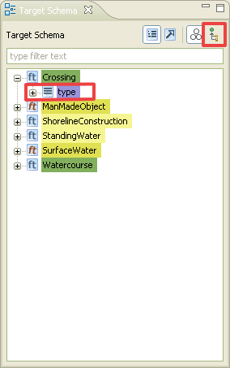

Mapping with Complex Schema
An example of use
TargetA.id and TypeB.id -> TargetB.id"/>
There are two Context Conditions for the River. Every defined context condition on a type will create one new child for this type (see image 1.1). It is not necessary to map each child property, it is possible to choose the parent property, for the mapping, instead.
On standard perspective (default), the Schema Explorer - view shows the types as a list. This list looks like a flat and simple schema structure, which is good for type mapping.
Every explanation underneath, works for the target schema as well.
The type hierarchy  icon in the Schema Explorer - view changes the schema to be represented by a tree (the higher in hierarchy the more left a element is listed).
Click on the [+] in the Schema Explorer - view source section, to expand the hierarchy.
(Switching between type as list and type hierarchy will cause the schema tree to collapse)
icon in the Schema Explorer - view changes the schema to be represented by a tree (the higher in hierarchy the more left a element is listed).
Click on the [+] in the Schema Explorer - view source section, to expand the hierarchy.
(Switching between type as list and type hierarchy will cause the schema tree to collapse)
To simplify the tree structure, it is possible to hide some properties, which are inherited. Click the Hide inherited properties icon at the view bar.
Is it wanted to be mapped by using inheritence, this can be used. So only the highest appearence of this property is shown and it prevents the case, that a already inherited property is used (slected the property of a child and not the property of a parent type).
For example: AbstractGML has the id property, so every AbstractFeature type do.
The id is inherited to every type which is an AbstractFeature type. Result: the id appears
only at the highest point of the hierarchy and only once.
The id property of the feature type Crossing dissapears, but the type property stays.
Also note the different background colors of the schema elements. A faded color means an indirect mapped property. (Mapped due to inherited relations)
See Schema Explorer for more informations about interpreting the Schema.

1. Choose the option.
2. Expand the tree until ...
3. ...the desired source and target properties are found.
1. Select the source property
2. Select the target property
3. Click on  and choose Rename. It could be any function, the Rename function is common use. Finish the function.
and choose Rename. It could be any function, the Rename function is common use. Finish the function.
Expand the tree within the type with the mapped property. For this example: AbstractGML (parent, abstract type) > AbstractFeatureType (child of AbstractGML, abstract feature type). The description property of the AbstractFeatureType is indirectly mapped (faded background).
The abstract feature types ManMadeObject and SurfaceWater (both children of AbstractFeatureType) inherit the property description, and so they also inherit the alignment for the description property.
The created Alignment (cell) for a child type; note the up arrow.
 or
or  ) and one or more
"children type"(s). The last children in the depth of inheritance should be
concrete. (
) and one or more
"children type"(s). The last children in the depth of inheritance should be
concrete. ( or
or  )
)